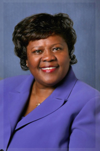

Sandra
J. DeLoatch, Ph.D.
Sandra
Jean DeLoatch received a B.S. degree in
mathematics (Magna Cum Laude) from Howard
University and was elected to Phi Beta Kappa.
She earned graduate degrees in mathematics and
computer science and attended University of
Michigan (M.A.), Indiana University (Ph.D.), and
The College of William and Mary (M.S.).
She began her
academic career at Norfolk State University
(NSU) in 1972. She was responsible for
initiating the Computer Science Program at NSU
in 1983 and became the first Computer Science
Department Chair. She led the Computer program
to national accreditation in 1991. She served
as a team chair and program evaluator for the
Computer Science Accreditation Commission from
1987 through 1999. She was appointed to her
present position, Dean of NSU’s College of
Science, Engineering, and Technology (CSET) in
2000.
Under her
leadership efforts have been made to establish
the College as a science and technology
powerhouse and they encompass: vigorous
recruitment initiatives that have produced a 19%
enrollment increase since 2007; expanding
graduate program offerings substantially,
including NSU’s first Ph.D. program in the
sciences; establishing specialized tutoring and
mentoring programs to help improve graduation
and retention rates; securing funding to help to
modernize all of the classrooms and many
research laboratories currently used by College
faculty; launching an annual May faculty
development workshop that introduces new
pedagogies and innovations that are factor in
retention rate gains; and initiating an annual
CSET Awards Luncheon to celebrate the
accomplishments of alumni “stars” and faculty.
Dr. DeLoatch has
effectively administered over $20M in external
funding for research and educational projects
from agencies such as the Department of Energy (DoE),
National Oceanic and Atmospheric Administration,
National Science Foundation, Department of
Education, NASA Langley Research Center,
Department of Defense, and Army Corps of
Engineers. She was recently awarded funding
from DoE to establish a Massie Chair of
Excellence in Information Assurance and Cyber
Security at NSU, a position she will hold for at
least three years. In addition, she is
currently leading several funded projects that
focus on advancing the participation of
minorities and women in Science, Technology,
Engineering (STEM) disciplines. She has
authored mathematics textbooks and computer
science research articles, and technical
reports.
Her awards
include: NSU’s Roy A. Woods Teacher of the Year
(1983); National Technical Association Technical
Achiever of the Year (2000); NSU Administrator
of the Year (2001); Girl Scout Council of
Colonial Coast Woman of Distinction Award
(2003); Area II NAACP ACT-SO Tribute to
Excellence Award (2005); International
Association of Administrative Professionals
(Tidewater Chapter) 2007 Executive of the Year;
Virginia Association of Educational Office
Professionals Administrator of the Year (2009);
Dorothy Barber Lifetime Achievement Award from
the Girl Scout Council of Colonial Coast
(2010); and Information Technology Executive
Ivory Dome Achievement Award from the
Information Technology Senior Management Forum
(2010). She worked collaboratively with the
Urban League to establish and host its first
Video Game Programming Workshops for public
school students. Through her efforts NSU’s CSET
was awarded the Urban League Martin Luther King,
Jr. Community Service Award (2005).
Dr. DeLoatch is a
member of the Board of Zoning Appeals for the
City of Suffolk, VA. She is a life member of
the Girl Scouts and is currently Chair of the
Board for the Girl Scout Council of Colonial
Coast. Her work with the Council includes the
launch of Saturday STEM workshops for girl
scouts at NSU. She serves as a member and
secretary of the Board of Trustees for the Old
Dominion University Research Foundation. Dr.
DeLoatch is also a member of Alpha Kappa Alpha
Sorority, Inc.
|